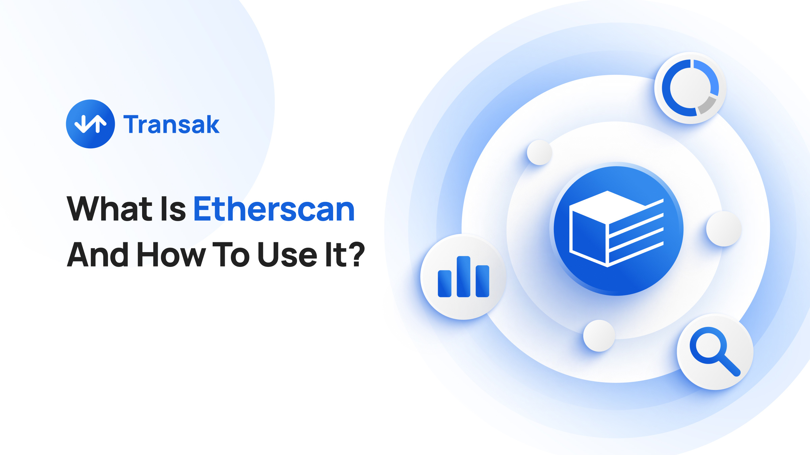
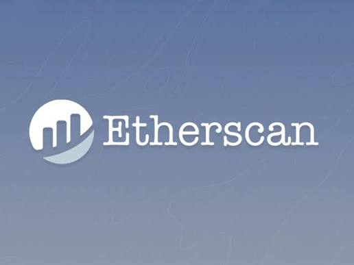
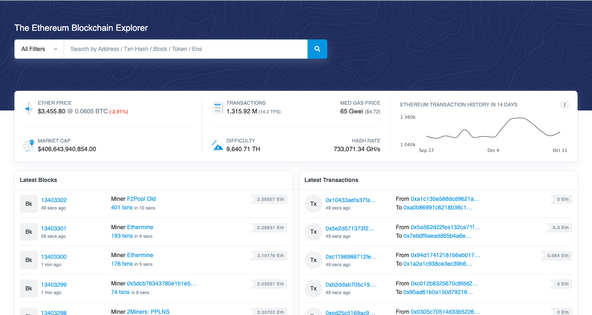
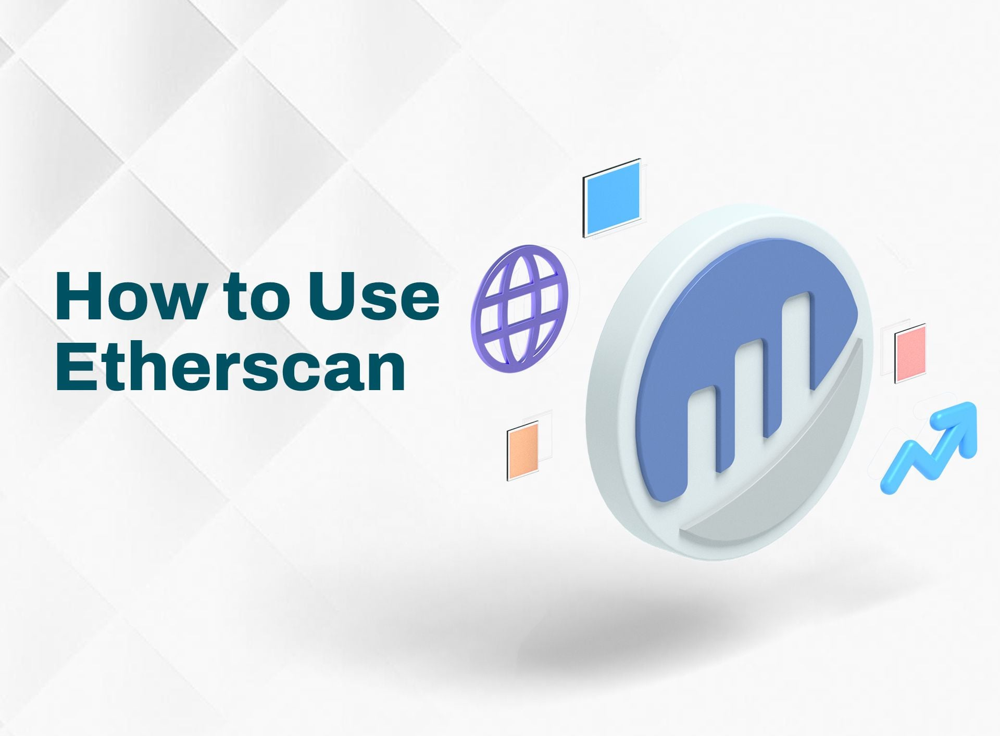
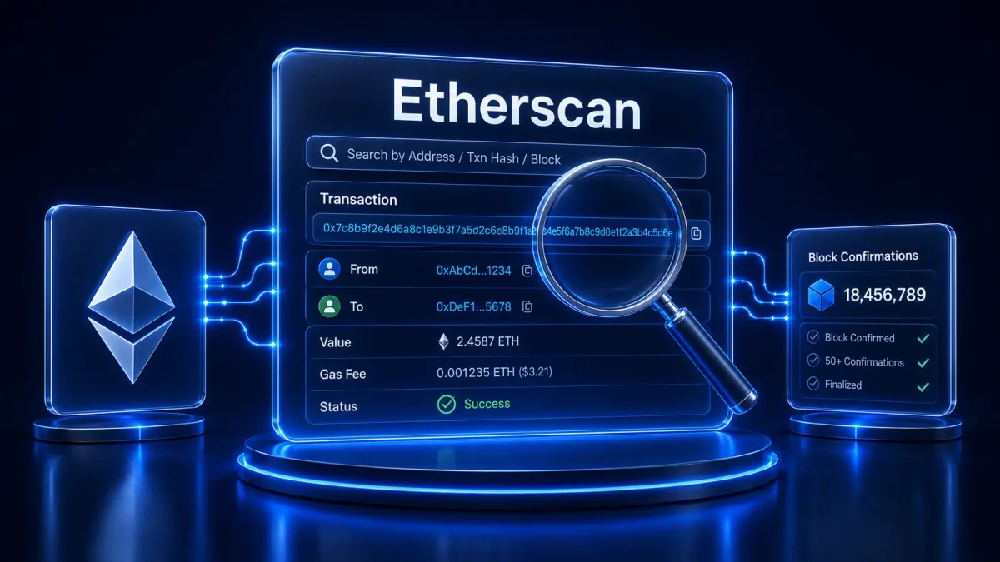

Offline Website Builder
Etherscan is the most widely used and trusted blockchain explorer for the Ethereum network, serving as a public window into the world’s largest smart‑contract ecosystem. Launched in 2015, it has grown into a foundational tool for developers, traders, researchers, and everyday crypto users who need to verify transactions, inspect smart contracts, track tokens, and understand on‑chain activity with complete transparency.
At its core, Etherscan is a read‑only blockchain explorer—a platform that indexes Ethereum’s public ledger and transforms raw blockchain data into human‑readable information. It does not require a wallet connection, does not store private keys, and cannot execute transactions. Instead, it acts as a neutral, independent search engine for Ethereum.
This independence is crucial. Because Ethereum is decentralized, no single entity controls its data. Etherscan steps in to make that decentralized data accessible, searchable, and understandable. It is often described as the “Google of Ethereum” because of how seamlessly it allows users to search for any on‑chain identifier—transaction hash, wallet address, block number, token contract, or ENS name—through a single search bar.
Etherscan’s evolution mirrors the growth of Ethereum itself.
2015: Founded by Matthew Tan and launched alongside Ethereum’s mainnet. Within months, it added API services.
2016: Introduced smart contract verification and ERC‑20 token support, enabling transparency during the ICO boom.
2017: Added ENS lookups and displayed CryptoKitties metadata—its first major step into NFT tracking.
2020: Released BeaconScan, a dedicated explorer for Ethereum’s Proof‑of‑Stake beacon chain.
2021–2024: Expanded into multichain search, launched Blockscan Chat, and acquired Solscan, extending its reach beyond Ethereum.
2025–2026: Rolled out API V2 supporting 50+ blockchains, cementing its role as a multichain analytics powerhouse.
Today, Etherscan is operated by a 70+ member engineering and research team and ranks among the top 1,000 websites globally by traffic.
Etherscan continuously indexes data broadcast across Ethereum’s peer‑to‑peer network. Instead of querying the blockchain directly, users interact with Etherscan’s structured, real‑time mirror of Ethereum’s ledger.
The Lookup Cycle
Etherscan’s search pipeline follows a four‑step cycle: paste, read, follow, export.
Paste any identifier (transaction hash, address, block number, ENS name).
Read the decoded ledger view.
Follow internal calls, token transfers, or contract interactions.
Export data or share links for verification.
This simplicity is why Etherscan is indispensable for both beginners and experts.




Users can inspect any Ethereum transaction by pasting its hash into the search bar. Etherscan reveals:
Status (success, failed, pending)
Sender and receiver
Gas used and gas price
Block number and timestamp
Internal transactions (contract calls)
Token transfers (ERC‑20, ERC‑721, ERC‑1155)
This transparency helps users verify payments, troubleshoot stuck transactions, and audit smart‑contract interactions.
Every wallet page displays:
ETH balance
Token holdings
Full transaction history
Internal calls
First‑seen and last‑seen block
NameTag labels identifying known entities (exchanges, bridges, whales)
This makes Etherscan a powerful tool for tracking wallet activity, spotting scams, and analyzing market behavior.
Developers can upload and verify contract source code, allowing anyone to inspect how a contract works. Verified contracts display:
Source code
ABI
Read/Write functions
Events
Contract creator and creation transaction
This feature is essential for DeFi transparency and security.
Etherscan’s gas tracker shows live gas prices, recommended gwei tiers, and network congestion. It updates every 10 seconds.
Users rely on it to choose the best time to send transactions and avoid overpaying.
Etherscan supports ERC‑20, ERC‑721 (NFTs), and ERC‑1155 tokens. Users can:
View token supply
Track holders
Inspect transfers
Verify token contracts
Check approvals and revoke permissions
BeaconScan tracks Ethereum’s Proof‑of‑Stake layer:
Validator performance
Attestations
Slashing events
Beacon chain blocks
This is crucial for staking analytics.
Through Blockscan and API V2, Etherscan now supports 50+ blockchains, including Solana via Solscan.
1. Transparency and Trust
Etherscan allows users to independently verify any on‑chain action. This is vital in a trustless ecosystem where transparency replaces intermediaries.
2. Security and Scam Prevention
By inspecting token contracts, approvals, and wallet activity, users can detect:
Fake tokens
Rug pulls
Suspicious contract interactions
Phishing attempts
3. Research and Analytics
Traders and analysts use Etherscan to:
Track whale movements
Monitor DeFi protocol activity
Analyze gas trends
Study token distribution
Follow NFT minting behavior
4. Developer Tools
Developers rely on Etherscan for:
Contract verification
Event logs
ABI access
API integration
Debugging contract interactions
1. Checking a Transaction
Copy the transaction hash from your wallet.
Paste it into Etherscan’s search bar.
Review the status, gas, block, and logs.
2. Reading a Wallet Page
A wallet page shows:
ETH balance
Token balances
Transaction history
Contract interactions
Approvals (important for security)
3. Inspecting a Smart Contract
Search for the contract address, then:
Read the verified source code
Check the contract creator
View events and function calls
Interact with the contract (read/write) if enabled
4. Tracking Gas Fees
Visit the Gas Tracker to see:
Low/average/high gwei
Estimated transaction costs
Network congestion levels
Etherscan is deeply embedded in the DeFi ecosystem. Protocols often link directly to Etherscan for:
Contract verification
Token tracking
Auditing
Transparency reports
NFT marketplaces also rely on Etherscan for metadata, ownership verification, and transfer history.
Developers building dApps use Etherscan’s APIs to integrate on‑chain data into dashboards, bots, and analytics tools.
Blockscan
A multichain search engine supporting 30+ blockchains.
Blockscan Chat
An encrypted wallet‑to‑wallet messaging app.
Explorer‑as‑a‑Service (EaaS)
Allows other blockchains to deploy their own explorers using Etherscan’s infrastructure.
Solscan Acquisition
Etherscan’s purchase of Solscan expanded its reach into the Solana ecosystem.
“Can someone steal my crypto by knowing my wallet address?”
No. Etherscan is read‑only and cannot access private keys.
“Does Etherscan show who owns a wallet?”
Not unless the owner publicly labels it. Most wallets remain anonymous.
“Is Etherscan only for Ethereum?”
Primarily, yes—but through Blockscan and API V2, it now supports many chains.
Ethereum continues to grow through:
Layer‑2 scaling
Rollups
Multichain interoperability
DeFi expansion
NFT innovation
Institutional adoption
As complexity increases, tools like Etherscan become even more vital. Its commitment to neutrality, transparency, and accessibility ensures it remains the backbone of on‑chain intelligence.
Etherscan is far more than a blockchain explorer—it is a cornerstone of Ethereum’s transparency, security, and usability. From verifying transactions to auditing smart contracts, tracking tokens, analyzing gas fees, and exploring multichain ecosystems, Etherscan empowers users to navigate Web3 with confidence.
Its decade‑long history, continuous innovation, and trusted independence make it one of the most important tools in the blockchain world.
Offline Website Builder